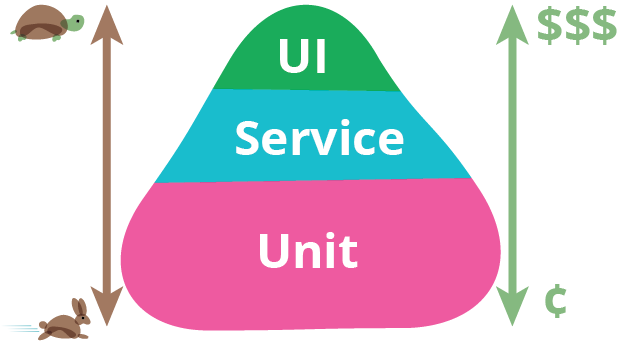

Modern software engineering, agile development, and DevOps practices are based on the pipeline approach, where any idea (feature or change request) is built through pipes strongly based on different automation layers. The test Automation process is an (if not the most) important key to deliver valuable software systematically. There are several layers of test automation that adds value to the pipeline, depending on factors like cost of automation, how often and how fast tests are running, where (in which environment) the test runs, and how valuable/effective checks are. The following image represents the ideal test automation layers, being Unit tests the fastest and the cheapest. On the other hand, UI (end-to-end) tests are quite slow and more expensive.  Of course, the exact mix of tests will depend on each team, but the efforts invested on each specific test approach should respect this pyramid, especially in GeneXus. Why?Unit Tests are the most important layer of testing on GeneXus apps, basically because of these 3 main reasons:
Additionally, all GeneXus developers need to run/debug their procedures in some way after writing down some procedures. Traditionally they test input/ output using self-made Web Panels or UI to run it using different input and evaluating outputs. All this effort can be reduced (and automated) by using the new Test feature inside GeneXus, and by letting those tests as an important asset to your Knowledge Base. Unit test has a major disadvantage, which is that even in an isolated way, some function works as expected, the system as a whole (integrated with different components) can be buggy. GeneXus apps often designed to expose services through SOAP or REST APIs, providing an important entry point to test business logic together. That’s why it is recommended to automate as-much-as-you-can API / Service test.
When your core business logic is encapsulated inside GeneXus procedures and Data Providers, then you will take advantage of unit testing with the best ROI. On the other hand, when the logic that you want to test is not in Procedures but encapsulated on panels (i.e. WebPanels or SD Panels which is also a very bad programming practice in GeneXus), then you will need to test your features using a different approach. So, UI tests are the last layer (traditionally the preferred approach in GeneXus). UI test automation can be flaky, and very dependant on your test infrastructure, data, frameworks used and browser versions, but still the only way to simulate real user interactions. To get the best of UI test automation it is recommended to start building test from: Recommended references
|
| Backlinks | ||
| Toc:GXtest v4 | Methodology | UI Test for Web Automation |